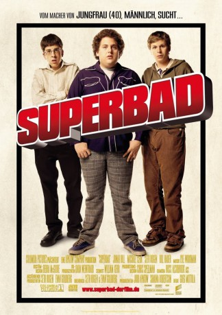

#1639 Superbad
 
 IMDB-Wertung: 7.6 / 10
IMDB-Wertung: 7.6 / 10  Metascore: 76
Metascore: 76 
Nicht zusammengewachsen, aber mindestens ebenso unzertrennlich: Die beiden Freunde Seth und Evan machen seit den Kindertagen buchstäblich alles zusammen. Obwohl beide im Grunde ziemlich gegensätzlich sind. Eine nennenswerte Menge an Freunden haben die beiden dank ihres Loserimages nicht und die Schulzeit haben sie immerhin fast überstanden. Da droht die Katastrophe: Jeder ist an einem anderem College angenommen worden. Vorher planen die beiden aber die “Nacht der Nächte” voller “Freunde”, Alkohol, Mädchen und dem geplanten Abschied vom Loserimage. So oder so - es wird einer dieser Nächte, an die man sich sein ganzes Leben erinnern wird…
Jahr: 2007
Dauer: 113 Minuten
FSK: 16
Land: USA Studio: Columbia PicturesTonspuren: DD5.1 - ,
Untertitel:
Auflösung: 1080p (1920x1040) Größe: 10342 MB
Genre: Komödie
Regisseur: Greg Mottola
Drehbuch: Seth Rogen, Evan Goldberg
Soundtrack: Lyle Workman
Darsteller:
 Jonah Hill als Seth
Jonah Hill als Seth Michael Cera als Evan
Michael Cera als Evan Christopher Mintz-Plasse als Fogell
Christopher Mintz-Plasse als Fogell Bill Hader als Officer Slater
Bill Hader als Officer Slater Seth Rogen als Officer Michaels
Seth Rogen als Officer Michaels Martha MacIsaac als Becca
Martha MacIsaac als Becca Emma Stone als Jules
Emma Stone als Jules- Aviva Baumann als Nicola
 Joe Lo Truglio als Francis the Driver
Joe Lo Truglio als Francis the Driver Kevin Corrigan als Mark
Kevin Corrigan als Mark Clement Blake als Homeless Guy
Clement Blake als Homeless Guy- Erica Vittina Phillips als Liquor Store Cashier
 Joe Nunez als Liquor Store Clerk
Joe Nunez als Liquor Store Clerk Dave Franco als Greg the Soccer Player
Dave Franco als Greg the Soccer Player Marcella Lentz-Pope als Gaby
Marcella Lentz-Pope als Gaby- Laura Seay als Shirley
 Stacy Edwards als Evan's Mom
Stacy Edwards als Evan's Mom Charlie Hartsock als Good Shopper Cashier
Charlie Hartsock als Good Shopper Cashier- Charley Rossman als Good Shopper Security
 Carla Gallo als Period Blood Girl
Carla Gallo als Period Blood Girl- Ben Best als Quince Danbury
- Jody Hill als Tut Long John Silver
 Kevin Breznahan als Patrick Manchester
Kevin Breznahan als Patrick Manchester David Krumholtz als Benji Austin
David Krumholtz als Benji Austin Mousa Kraish als Billy Baybridge
Mousa Kraish als Billy Baybridge- Nicholas Jasenovec als Coffee Fairmount
 Martin Starr als James Masselin
Martin Starr als James Masselin- Matt McKane als Kane Cloverdale
 Lauren Miller als Scarlett Brighton
Lauren Miller als Scarlett Brighton- Peter Salett als Tiger Greendragon
- Rakefet Abergel als Muffin Selby
- Brooke Dillman als Mrs. Hayworth
- Michael Naughton als Gym Teacher
 Steve Bannos als Math Teacher
Steve Bannos als Math Teacher Laura Marano als Young Becca
Laura Marano als Young Becca- Matthew Bass als Vagtastic Voyager
- Aurora Snow als Vagtastic Voyage Girl
- Jenna Haze als Vagtastic Voyage Girl
- Brian Huskey als Elementary Principal
 Clark Duke als Party Teenager
Clark Duke als Party Teenager- Stephen Borrello IV als Party Teenager
- Naathan Phan als Party Teenager
- Pamella D'Pella als Teacher
- Darya Balyura als Partygoer , uncredited
- Bob Cryer als Sgt. Ben Mitchell , uncredited
- Ryan de Quintal als Seth's Friend , uncredited
- Clayton Frey als Drunk Dude , uncredited
- Chelsey Goodan als Pepsi Cheyenne , uncredited
 Marc Grapey als Shrink , uncredited
Marc Grapey als Shrink , uncredited- Lindsay Hanzl als School Girl , uncredited
Datei: X:\2007(N-Z)\Superbad (2007, FSK16, 1920x1040).mkv seit 29.07.2015
Festplatte: HD 2007(A-Z)-2008(A-F)
 Es gibt insgesamt 56 Filme in der Gruppe '2007(N-Z)'
Es gibt insgesamt 56 Filme in der Gruppe '2007(N-Z)'